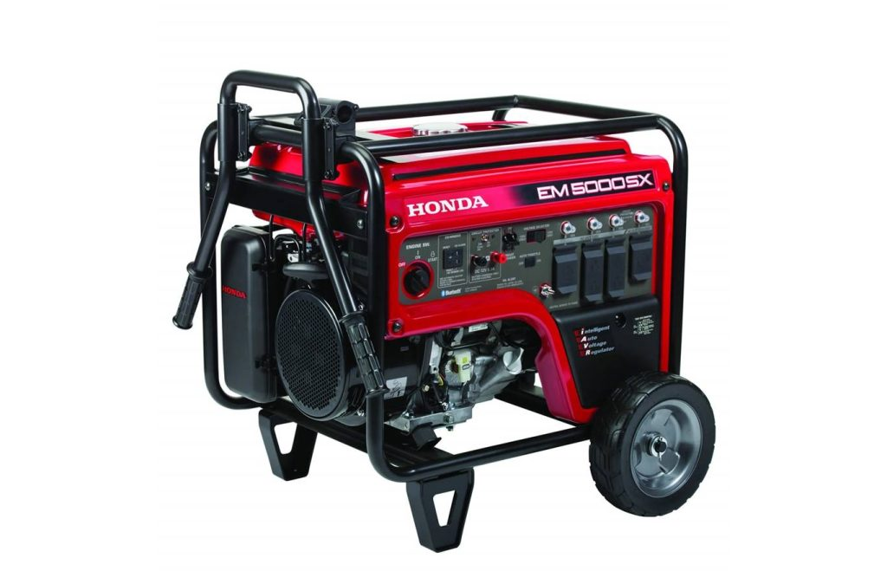
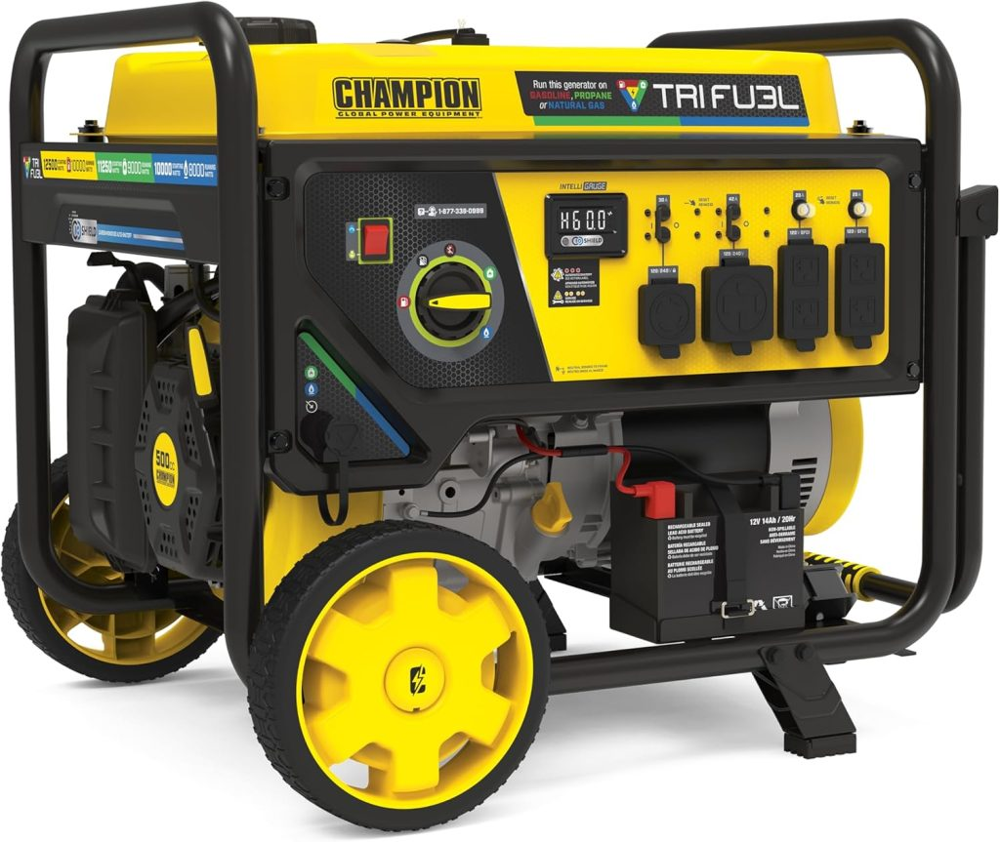
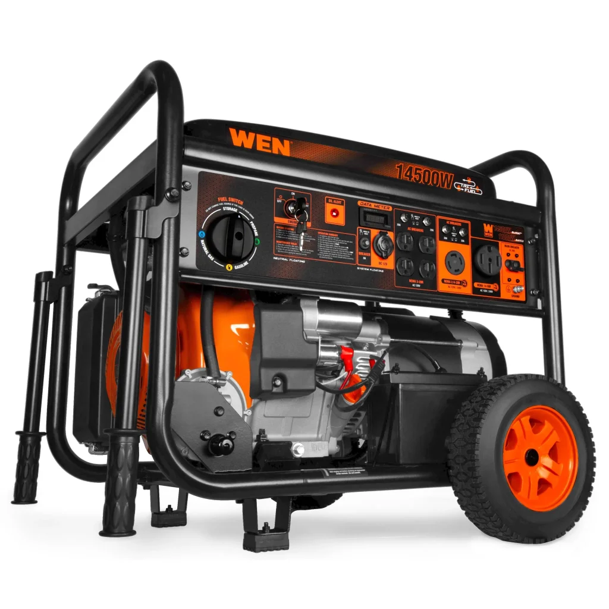
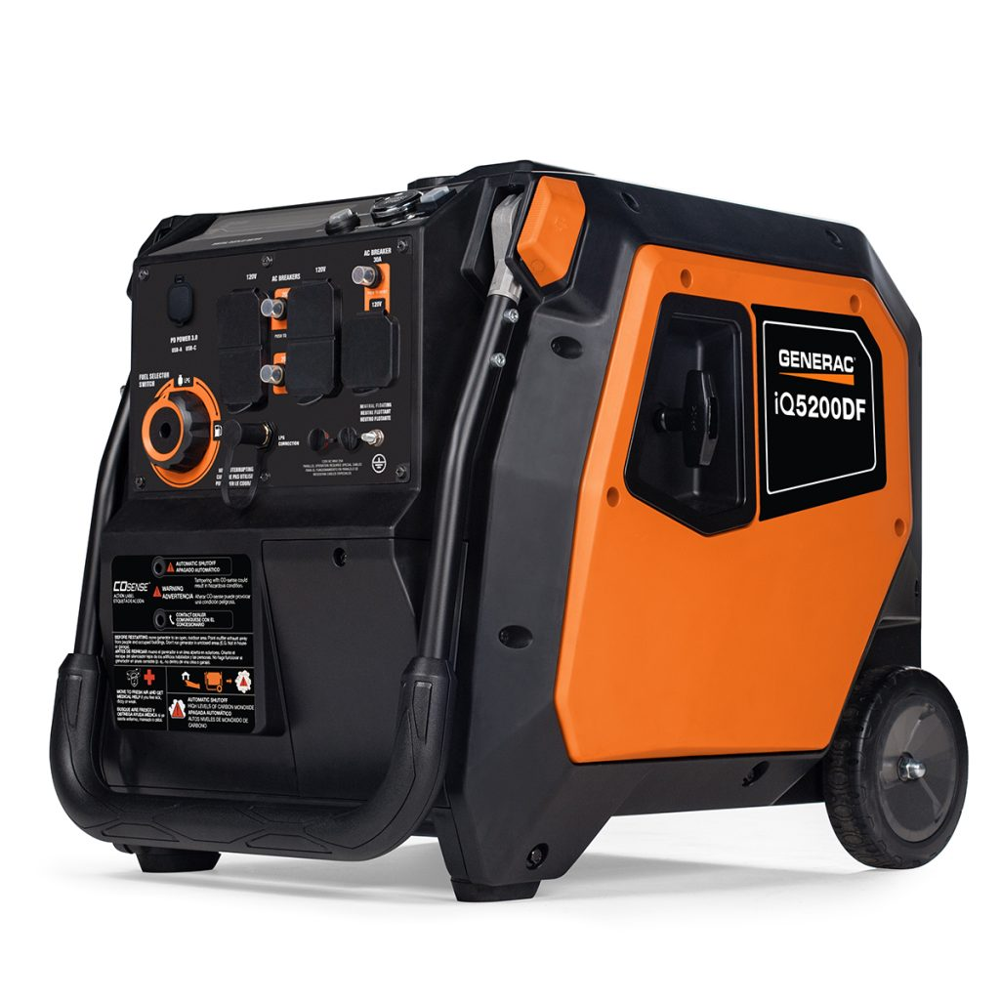
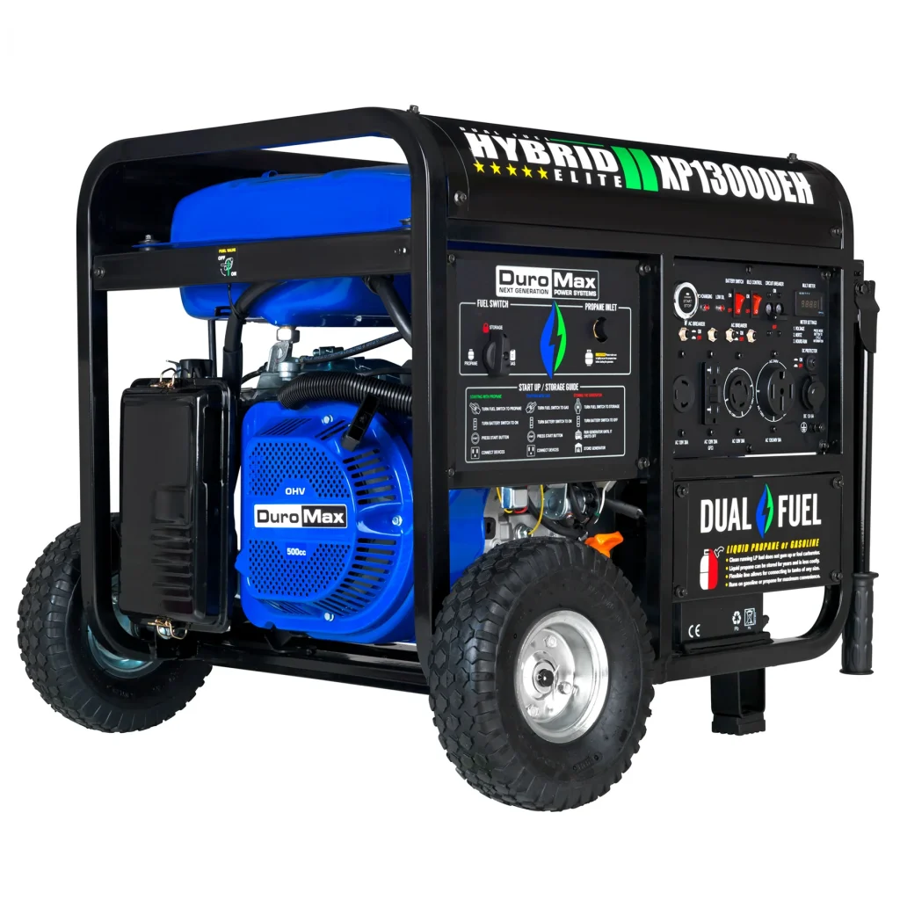

Power outages in the USA are no longer rare, seasonal events. According to federal energy data, the average American household experienced more than eight hours of total outage time in recent years — and that number has been climbing every year alongside the rise in extreme weather events, aging grid infrastructure, and grid demand spikes. When the lights go out, the difference between a stressful crisis and a manageable inconvenience is one piece of equipment: a reliable portable generator.
This guide covers the best home generators for power outages available in 2026 — with real specs, honest performance breakdowns, clear size-to-budget guidance, and everything you need to pick the right model for your home without wasting money on the wrong one.
What to Look for in the Best Portable Generator for Home Power Outages?
Before jumping to models, spend two minutes on this section. The single biggest mistake homeowners make when buying a generator is choosing by peak watt number alone. Here is what actually matters for home outage preparedness:
Calculate Your Real Wattage Needs First
Running watts (what an appliance needs to keep running) and starting watts (the surge required when a motor kicks on) are different numbers. A refrigerator needs about 150–200 running watts but can surge to 800W on startup. A window AC unit might need 1,200 running watts but surge to 1,800W. Add up running watts for everything you want to power simultaneously, then add 20–30% for surge headroom.
Basic outage survival (fridge, lights, phone chargers, fans): 3,000–5,000 running watts Mid-home coverage (adds sump pump or electric furnace blower): 5,000–8,000 running watts Whole-home backup (adds central AC or well pump): 9,500–13,000 running watts
Fuel Type — Why Dual-Fuel Wins for Outage Use in 2026
Gasoline is the default — but in a major regional outage, gas station lines stretch for hours or stations run dry within 24 hours. Propane stores indefinitely in tanks you already own, burns cleaner, and keeps your generator running after gas is unavailable. In 2026, dual-fuel models have become the standard recommendation for outage preparedness specifically because of fuel availability problems during widespread emergencies.
Tri-fuel models add natural gas compatibility — meaning if your home is connected to a gas line, you have an essentially unlimited fuel supply during most outages (gas lines almost never fail when the power grid does).
Inverter vs. Conventional — The Honest Answer
Inverter generators produce clean, stable power (Total Harmonic Distortion under 3%) that is safe for laptops, medical equipment, CPAP machines, and modern TVs. They run quieter (50–60 dB), use less fuel at partial loads, and are the right choice for households with sensitive electronics or medical devices.
Conventional generators are louder (68–75 dB), less fuel-efficient at partial load, and produce slightly dirtier power — but they are significantly cheaper per watt and handle heavy loads like well pumps and central AC without limitation.
For most homeowners, the answer is: inverter if your budget allows and your loads are primarily electronics and mid-range appliances; conventional dual-fuel if you need maximum wattage per dollar for a larger home.
Noise, Safety, and Portability
Under 70 dB is the threshold for acceptable residential-neighborhood operation — and anything under 60 dB can run without disturbing conversations nearby. CO shutoff is non-negotiable in 2026 and is now included on virtually every quality model. Electric or remote start is a meaningful convenience upgrade over a pull cord, especially for users who may be older or managing a crisis situation alone.
Quick Comparison — Best Home Generators for Power Outages 2026
| Model | Running Watts | Fuel | Noise | Type | Best For | Price |
|---|---|---|---|---|---|---|
| Westinghouse iGen5000DFc | 3,900W | Dual-Fuel | 55 dB | Inverter | Mid-home, clean power | ~$900–$1,100 |
| Honda EM5000SX | 4,500W | Gasoline | 68 dB | Conventional | Premium reliability | ~$1,200–$1,400 |
| Champion 12,500W Dual-Fuel | 9,500W | Dual-Fuel | 74 dB | Conventional | Large home backup | ~$1,000–$1,300 |
| WEN 14,500W Tri-Fuel | 11,000W | Tri-Fuel | 72 dB | Conventional | Natural gas homes | ~$800–$1,000 |
| Generac iQ5200 Dual-Fuel | 3,900W | Dual-Fuel | 50 dB | Inverter | Quietest residential | ~$1,000–$1,200 |
| DuroMax XP13000EH | 10,500W | Dual-Fuel | 74 dB | Conventional | Whole-home value | ~$1,100–$1,300 |
In-Depth Reviews — Best Portable Generators for Home Power Outages
1. Westinghouse iGen5000DFc — Best Overall Generator for Home Power Outages
If you could only recommend one generator to the average homeowner in a storm-prone area of the USA, the Westinghouse iGen5000DFc is it. It covers the most common residential outage scenario — keeping a refrigerator, lights, phone chargers, a TV, and a fan running — with inverter-quality clean power, dual-fuel flexibility, and a noise level (55 dB) that lets it run in a suburban neighborhood without complaints from neighbors.
The 3,900 running watts / 5,000 surge watts is the right size for mid-home essential coverage. The dual-fuel operation means you can run on propane if gasoline runs out — extending your ability to stay powered through longer regional outages when gas stations have queues. An 18-hour propane runtime on a 20-lb tank is exceptional. Electric start, an onboard CO sensor that shuts the unit down automatically if carbon monoxide builds up, parallel capability (connect two units for doubled output), and an LED data center display make this the most complete package at this price point.
Specs at a Glance
| Spec | Detail |
|---|---|
| Running / Peak Watts | 3,900W / 5,000W |
| Fuel | Gasoline or Propane (dual-fuel) |
| Runtime | Up to 18 hrs on propane / 20-lb tank |
| Noise Level | 55 dB |
| Generator Type | Inverter |
| Weight | 105 lbs with wheels |
| CO Sensor | Yes — auto shutoff |
| Electric Start | Yes — remote key fob |
| Approximate Price | ~$900–$1,100 |
Pros and Cons
| Pros | Cons |
|---|---|
| Inverter-quality clean power for electronics | Not sufficient for whole-home with central AC |
| 55 dB — apartment and neighborhood friendly | Heavier than basic inverters at 105 lbs |
| Dual-fuel flexibility — gasoline or propane | |
| 18-hour propane runtime | |
| CO auto shutoff + remote electric start | |
| Parallel-capable for doubled output |
Best For: Homeowners in storm-prone suburban or urban areas who want the best combination of quiet operation, fuel flexibility, and clean power for a mid-sized home.
2. Honda EM5000SX — Best Premium Reliability for Critical Outages

Honda generators have a decades-long reputation for outlasting competitors by years, and the EM5000SX upholds that standard. The iAVR (Automatic Voltage Regulation) technology provides stable power output even as load varies, which matters when you are running a mix of motor-driven appliances and electronics simultaneously. At 4,500 running watts, it covers everything the Westinghouse does plus more headroom for demanding loads.
This is not the quiet, fuel-efficient inverter choice — at 68 dB it is noticeably louder and it runs only on gasoline. But if your priority is a generator that will start reliably at 2 AM in a rainstorm after sitting in a garage for 11 months, and will still be running 15 years from now with basic maintenance, Honda is the brand that earns that level of confidence. Service centers are widely available across the USA, which matters for long-term ownership.
Specs at a Glance
| Spec | Detail |
|---|---|
| Running / Peak Watts | 4,500W / 5,000W |
| Fuel | Gasoline only |
| Runtime | 10+ hours at 50% load |
| Noise Level | 68 dB |
| Generator Type | Conventional |
| CO Sensor | Yes |
| Electric Start | Yes |
| Approximate Price | ~$1,200–$1,400 |
Pros and Cons
| Pros | Cons |
|---|---|
| Industry-leading long-term reliability | Single fuel — gasoline only |
| iAVR for stable power under variable load | Louder than inverter alternatives |
| Extensive nationwide service network | Higher price than comparable wattage |
| CARB-compliant, 50-state legal |
Best For: Homeowners who prioritize long-term reliability above everything else, professionals, or anyone who has had a generator fail during a critical outage and wants to ensure that never happens again.
3. Champion 12,500-Watt Dual-Fuel — Best Value for Large Home Backup

For homes that need to run HVAC, a well pump, sump pump, refrigerator, and lights simultaneously during an extended outage, the Champion 12,500W is the most accessible price point for that level of power. At 9,500 running watts on gasoline and dual-fuel operation with electric start, it handles whole-home essentials without the $2,000+ price tag of branded alternatives with similar specs.
The CO Guard sensor, never-flat wheels, and heavy-duty frame make it built for genuine deployment — not just sitting in a garage. Runtime of 9+ hours at 50% load gives you solid overnight coverage. The trade-offs are noise (74 dB — this runs loud) and weight (200+ lbs — this is a two-person move). Plan placement and a transfer switch installation before you need it.
Specs at a Glance
| Spec | Detail |
|---|---|
| Running / Peak Watts | 9,500W / 12,500W |
| Fuel | Gasoline or Propane |
| Runtime | 9+ hrs at 50% load |
| Noise Level | 74 dB |
| Generator Type | Conventional |
| CO Sensor | Yes — CO Guard |
| Electric Start | Yes |
| Approximate Price | ~$1,000–$1,300 |
Pros and Cons
| Pros | Cons |
|---|---|
| Whole-home power at a value price | Loud at 74 dB |
| Dual-fuel flexibility | Heavy — 200+ lbs, two-person handling |
| CO Guard auto shutoff | Not suitable for noise-sensitive neighborhoods |
| Transfer switch-ready 50A outlet | Conventional (not inverter) power output |
| Never-flat wheels for all-terrain deployment |
Best For: Larger homes (3+ bedrooms) in the USA with regular outage exposure who want true whole-home backup coverage without spending $2,000+.
4. WEN 14,500-Watt Tri-Fuel — Best for Natural Gas Homes

If your home is connected to a natural gas line, the WEN 14,500W tri-fuel generator changes the outage calculus entirely. Natural gas lines almost never fail when the electrical grid goes down — meaning a natural gas-capable generator gives you effectively unlimited runtime without storing fuel, refilling tanks, or queuing at gas stations. This is the most practical long-duration outage solution available for homeowners with gas service.
At 11,000 running watts on gasoline (slightly lower on propane and natural gas), it covers virtually every home load including central AC. The price point of $800–$1,000 for this level of capability is genuinely competitive. The limitation is the same as the Champion — it is a conventional generator, it is loud, and it is heavy. But for extended outages measured in days, the fuel security of a tri-fuel unit is worth every pound.
Specs at a Glance
| Spec | Detail |
|---|---|
| Running / Peak Watts | 11,000W / 14,500W |
| Fuel | Gasoline, Propane, or Natural Gas |
| Generator Type | Conventional |
| Electric Start | Yes |
| Approximate Price | ~$800–$1,000 |
Pros and Cons
| Pros | Cons |
|---|---|
| Natural gas capability — unlimited runtime | Heavy and loud |
| Highest wattage for the price on this list | Conventional power only |
| Three fuel options for maximum outage resilience | |
| Affordable for the output level |
Best For: Homeowners with natural gas service who want multi-day outage capability without fuel storage concerns.
5. Generac iQ5200 Dual-Fuel Inverter — Quietest Residential Generator

At 50 dB, the Generac iQ5200 is the quietest generator on this list — running at roughly the level of a quiet conversation. For densely-populated neighborhoods, HOA-governed communities, or homeowners who run the generator close to sleeping areas or home offices, this noise level is a meaningful advantage over conventional alternatives. Dual-fuel operation at 3,900 running watts covers the same mid-home essentials as the Westinghouse, and parallel capability lets you connect two units if more power is ever needed.
The USB ports and LCD display add modern convenience, and the CO sensor with automatic shutoff is included. The price premium over the Westinghouse reflects the lower noise engineering — if 55 dB is acceptable for your situation, the Westinghouse offers better value. If under 55 dB is a requirement, the Generac is the pick.
Specs at a Glance
| Spec | Detail |
|---|---|
| Running / Peak Watts | 3,900W / 5,200W |
| Fuel | Gasoline or Propane |
| Noise Level | 50 dB |
| Generator Type | Inverter |
| CO Sensor | Yes |
| Electric Start | Yes |
| Approximate Price | ~$1,000–$1,200 |
Best For: Suburban and urban homeowners in noise-sensitive environments — HOA communities, densely-built neighborhoods, or anyone running the generator close to bedrooms or a home office.
6. DuroMax XP13000EH — Best Whole-Home Value Dual-Fuel Generator

The DuroMax XP13000EH has become one of the most-purchased whole-home backup generators in the USA for straightforward reasons: it delivers 10,500 running watts / 13,000 surge watts on a dual-fuel 500cc OHV engine with all-copper windings, CO Alert auto shutoff, electric start, and a fully loaded power panel including a 50-amp transfer-switch-ready outlet — all for around $1,100–$1,300.
The 50-amp outlet means you can connect a transfer switch and power hardwired appliances including a water heater or well pump directly from the panel — a capability that distinguishes this from lower-tier whole-home options. Runtime at 50% load reaches 8 hours on gasoline with 17 hours at 25% load. It is loud (74 dB) and heavy, but for the household that needs maximum power for the least money, the DuroMax XP13000EH delivers on that promise more consistently than anything else at this price.
Specs at a Glance
| Spec | Detail |
|---|---|
| Running / Peak Watts | 10,500W / 13,000W |
| Fuel | Gasoline or Propane |
| Runtime | 8 hrs at 50% / 17 hrs at 25% load |
| Noise Level | 74 dB |
| Generator Type | Conventional |
| CO Alert | Yes — auto shutoff |
| Transfer Switch | Yes — 50A outlet included |
| Electric Start | Yes |
| Approximate Price | ~$1,100–$1,300 |
Best For: Homeowners who want whole-home backup power and a transfer-switch-ready setup at the lowest possible price — particularly in hurricane and storm-prone regions of the USA.
What Reddit and Consumer Reports Say About Home Generators for Power Outages?
What Reddit Communities Recommend?
On r/preppers, r/homeowners, and r/DIY — the most active communities discussing home backup power — a few consistent patterns emerge from the generator discussion threads.
Dual-fuel is the near-universal recommendation over single-fuel gasoline, with the fuel availability argument being the dominant reason. In every major hurricane or ice storm event discussed in those communities, users who had propane backup avoided the gas station problem entirely. The Champion and DuroMax dual-fuel models come up most frequently in the value tier. Honda appears consistently at the top of reliability discussions, with multiple users referencing units still running after 10–15 years with basic maintenance.
The most common regret expressed in Reddit threads is buying too little wattage — users who bought 3,500–4,000W units and then discovered their well pump or sump pump would not start. The general Reddit consensus in 2026 is: calculate your needs, then buy one size up.
What Consumer Reports Testing Tells Us About Home Generators?
Consumer Reports tests portable generators across cleaning performance, runtime accuracy, noise measurement, and ease-of-use criteria. Their testing consistently identifies several patterns relevant to buying decisions: claimed runtime figures from manufacturers tend to be optimistic at 50% load by 10–15%, CO shutoff response time varies meaningfully between brands (Honda and Westinghouse test fastest), and inverter models almost universally deliver cleaner power than their conventional counterparts at every price point tested.
Consumer Reports notes that large generators providing 7,000 to 8,000 watts can power most or all essential appliances during an outage but typically weigh 200 pounds or more — and for whole-home use, an electrician-installed transfer switch is recommended to power hardwired appliances like water heaters or well pumps.
The key takeaway from CR testing for 2026: the CO safety gap between newer and older models is substantial. If you own a generator purchased before 2020, the newer CO shutoff technology in current models represents a meaningful safety upgrade worth considering.
How to Use Your Generator Safely During a Power Outage?
This section matters as much as picking the right model. Generator misuse causes hundreds of CO poisoning deaths in the USA every year — virtually all of them preventable.
Placement is the most important safety decision you make. Place the generator at least 20 feet from any window, door, or air vent. CO is odorless and invisible, and it accumulates faster than people expect. Never run a generator in a garage — even with the door open. Never run one on a covered porch or under an awning.
Use a transfer switch, not extension cords run into the house. A properly installed transfer switch isolates your home from the grid, preventing backfeed that can electrocute utility workers restoring power. Extension cords rated for outdoor use and the load they carry are acceptable for running individual appliances but are not a substitute for a transfer switch if you want to power your home's circuits.
Test monthly, not just when you need it. Run the unit for 30 minutes under load every 30 days. Use fuel stabilizer if the generator will sit unused for more than 30 days. Change oil after the first 20 hours, then every 100 hours of runtime. A generator that will not start during an actual outage is the most common and preventable generator failure.
Install CO detectors inside the home regardless of how far the generator is placed from the building. This is a secondary safety net, not a substitute for correct placement.
For more on keeping your home running efficiently during cold weather outages, see our guide on which type of portable heater is most energy efficient — pairing a generator with the right portable heater is one of the most practical outage-preparedness combinations for winter storms.
How to Choose the Right Generator Size for Your Home?
This is the decision that most buying guides underserve. Here is a practical framework:
Solo or couple, apartment or small home: 3,000–5,000 running watts. The Westinghouse iGen5000DFc or Generac iQ5200 cover this scenario fully. You keep the refrigerator, lights, phone and laptop charging, and a fan or space heater running without issue.
Family home, 3 bedrooms, no well pump or central AC: 5,000–7,500 running watts. The lower end of the Champion or DuroMax range handles this. You can run the essential circuits plus a window AC unit if needed.
Full household with well pump, sump pump, or central AC: 9,500–13,000 running watts. The Champion 12,500W, WEN 14,500W, or DuroMax XP13000EH are the right tier. Budget for a transfer switch installation by an electrician (~$500–$1,000 depending on your panel) at the same time you buy.
Frequently Asked Questions
What is the best home generator for power outages in 2026?
For most homeowners, the Westinghouse iGen5000DFc is the best all-round choice — it covers mid-home essential loads with inverter-quality clean power, dual-fuel flexibility, quiet 55 dB operation, and a remote electric start. For larger homes needing whole-home coverage, the DuroMax XP13000EH provides the best wattage-per-dollar in the market.
What is the best portable generator for home power outages according to Consumer Reports?
Consumer Reports consistently rates Honda and Westinghouse highly for reliability, CO shutoff speed, and runtime accuracy. Their testing emphasizes that newer models with integrated CO safety technology represent a meaningful safety upgrade over older units, regardless of brand.
What do Reddit users recommend for home backup generators?
The consistent Reddit recommendation across preparedness and homeowner communities is dual-fuel over single-fuel gasoline, with the Champion and DuroMax brands frequently cited for value and the Honda for long-term reliability. The most common advice is to calculate your wattage needs first and then buy 20–30% more capacity than you think you need.
Is a dual-fuel or tri-fuel generator worth it for home outages in the USA?
Yes — particularly in regions with hurricane, ice storm, or wildfire risk where regional outages affect fuel availability. Propane stores indefinitely and avoids the gas station problem that occurs during widespread outages. Tri-fuel adds natural gas compatibility, which provides essentially unlimited runtime for homes connected to gas service.
How many watts do I need to power my home during an outage?
For basic survival essentials (fridge, lights, phone chargers, fan): 3,000–5,000 running watts. For mid-home coverage adding a sump pump or furnace blower: 5,000–8,000 watts. For whole-home coverage including central AC or well pump: 9,500–13,000 watts.
How long can a portable generator run continuously?
Most generators can run continuously for 8–18 hours depending on load and fuel tank size. For extended outages, plan a brief shutdown and cool-down period every 8–12 hours, check oil levels before restarting, and refuel safely after the engine cools.
Final Recommendations — Best Generator for Every Situation
| Your Situation | Best Pick |
|---|---|
| Best overall for mid-home outage | Westinghouse iGen5000DFc |
| Premium long-term reliability | Honda EM5000SX |
| Quietest for suburban neighborhoods | Generac iQ5200 |
| Best value for whole-home backup | DuroMax XP13000EH |
| Large home, maximum fuel flexibility | Champion 12,500W Dual-Fuel |
| Natural gas home, extended outages | WEN 14,500W Tri-Fuel |
No generator is the right generator for every home. The right one is the one that matches your actual wattage needs, your fuel access during a regional outage, your noise tolerance, and your budget. Any of the six models above delivers genuine, tested outage performance — the goal of this guide is simply to help you pick the right one for your specific situation rather than the most impressive-sounding spec sheet.
You May Also Like: